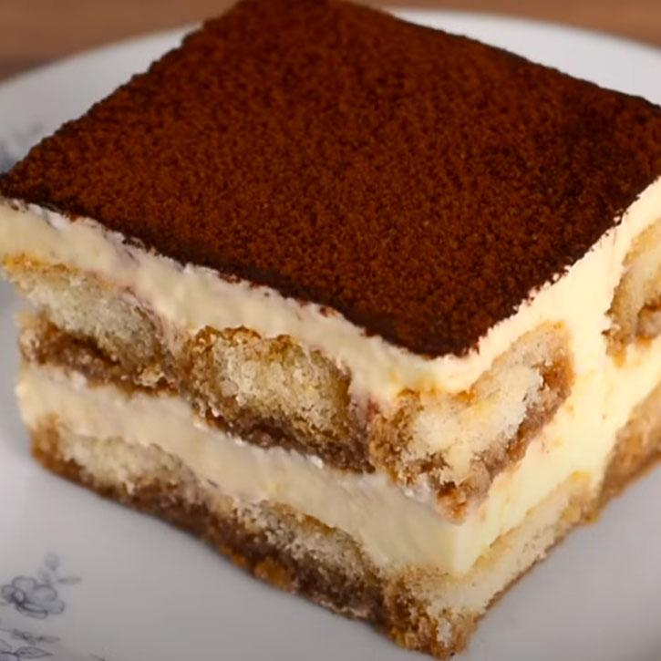

Tiramisu
Tiramisù is a classic Italian dessert made of layers of coffee-soaked ladyfingers and a rich mascarpone cream. Its smooth, creamy, and packed with flavor — perfect for any occasion.
This no-bake dessert is simple to prepare and loved by many for its balanced combination of coffee and sweetness. A sprinkle of cocoa powder on top makes it visually appealing and even more irresistible.
Ingredients
- 250g mascarpone cheese
- 3 eggs, separated
- 100g sugar
- 200g ladyfingers (savoiardi)
- 300ml strong coffee, cooled
- Unsweetened cocoa powder, for dusting
- Optional: 2 tbsp coffee liqueur (e.g., Kahlúa)
Steps
- Brew the coffee and let it cool. Add liqueur if using.
- In a bowl, whisk the egg yolks with sugar until pale and fluffy.
- Add mascarpone to the yolk mixture and mix until smooth.
- In a separate bowl, beat egg whites until stiff peaks form, then gently fold into the mascarpone mixture.
- Dip each ladyfinger briefly into the coffee and layer them in a dish.
- Spread half the mascarpone cream over the ladyfingers. Repeat the layers.
- Chill in the fridge for at least 4 hours. Dust with cocoa powder before serving.